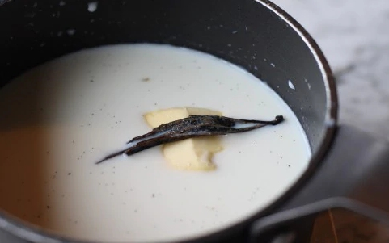
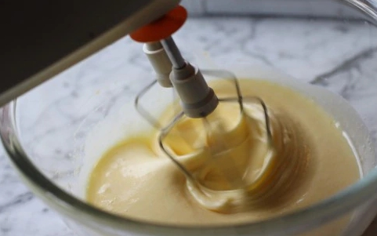
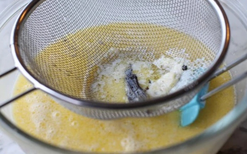
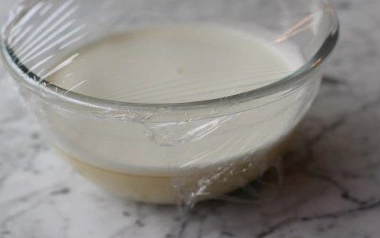
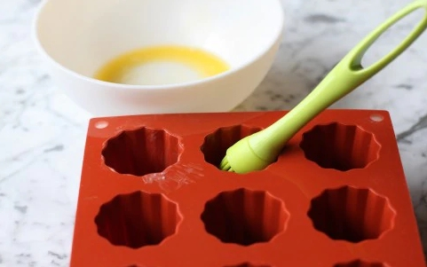
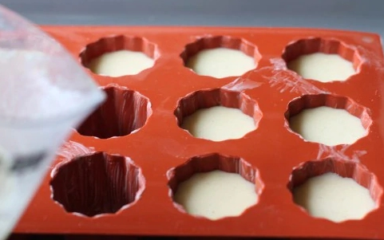
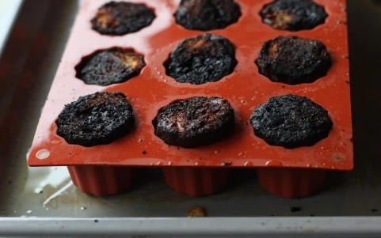
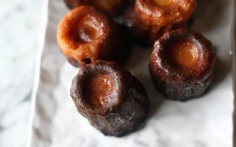
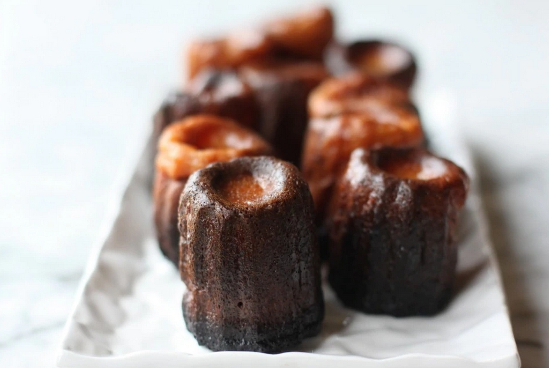

Canelés
Origini
La tradizione vuole che ad inventarli siano state le suore del convento dell'Annunciazione di Bordeaux, alle quali
i produttori di vino donaano i rossi d'uovo inutilizzati, dopo la tecnica del collaggio.
Durante le ristrutturazioni del convento, nonostante numerosi reperti rinvenuti, non si è però trovato traccia di stampi
per cannelés quindi probabilmente bisogna rintracciare altrove le origini.
Secondo altri, i cannelés sarebbero stati le specialità delle mogli degli scaricatori di porto, che avevano a disposizione
il rum e la vaniglia, portati a casa dai mariti dopo il lavoro.
La storia riporta, infine, che l'origine dei cannelés è da ricercare in uno speciale pane fatto con farina e rossi d'uovo che
si chiamava canaule. I maestri panificatori, specializzati nella realizzazione del canaule, venivano chiamati canauliers
ed erano autorizzati dalla legge a lavorare solo con quei due ingredienti. A loro era infatti vietato l'impiego dello zucchero,
ingrediente ad uso esclusivo dei pasticceri. I canaulier però aggiunsero all'impasto del loro pane anche il latte e lo zucchero
e così nacquero i cannelés: scoppiò una guerra di interessi tra canauliers e pasticceri, che terminò solo con l'abolizione
delle corporazioni.
Ricetta
| Difficoltà | Facile |
| Tempo di preparazione | 20 Minuti |
| Tempo di cottura | 60 Minuti |
| Porzioni | 10-15 Pezzi |
| Metodo di cottura | Forno |
| Cucina | Francese |
Ingredienti
Per la base
- 500ml Latte
- 150g Zucchero a velo
- 50g Burro
- 100g Farina
- 2 Uova intere
- 4 cucchiai di Rum
- 1 Tuorlo
Preparazione dei Canéles
Impasto
Il giorno prima scaldate il latte con il burro e la stecca di vaniglia incisa per la lunghezza così da far fuoriuscire
i semini. Lasciate raffreddare a temperatura ambiente.
In una ciotola montate con le fruste elettriche le uova intere,
il tuorlo con lo zucchero a velo.


Quando il composto sarà bello spumoso aggiungete la farina setacciata. Mescolate bene e aggiungete il rum.
Filtrate il latte, così eliminerete la stecca di vaniglia ed eventuale velo di panna sulla superficie, e miscelatelo al composto.
Coprite con pellicola alimentare e riponete la ciotola in frigorifero fino al giorno dopo.


Trascorso il tempo di riposo (24 ore) ungete lo stampo con burro fuso e riponetelo in frigorifero 5 minuti.
Versate il composto nello stampo fino a mezzo centimetro dal bordo.


Cottura
Accendete il forno e scaldatelo a 230°. Infornate i canéles per 10 minuti, poi abbassate a 210° e cuocete ancora per 50-55 minuti.
Una volta cotti, estraeteli dallo stampo quando si saranno intiepiditi.


I canéles sono così pronti per essere serviti.

Conservazione
I cannelés sono buonissimi se consumati tiepidi al momento perché mantengono la croccantezza fuori, rimanendo umidi dentro.
Potete comunque conservarli per 3-4 giorni sotto una campana di vetro.